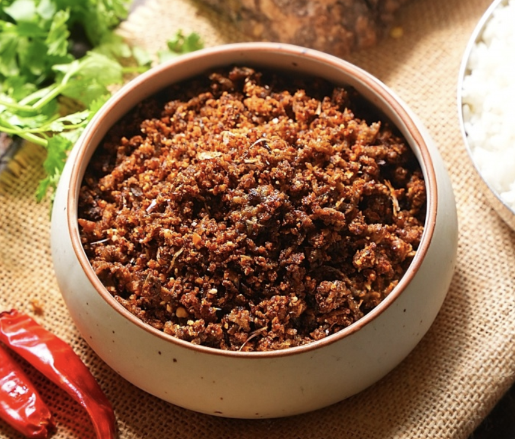

Search
|
PODIS
Search
Avisaginjala Karam podi
This spicy powder made out of is strong and aromatic and is a rare and delicious spicy powder, in the range of spicy powders exclusive to Telugus. It can be enjoyed with Rice, Idlis and Dosas and can also be used in Curries.
PODIS

Kara Podi
Kara Podi, also known as Kanda Karam Podi, is a spicy and flavorful South Indian condiment made with crispy fried yam, roasted peanuts, lentils, spices, and tamarind.
PODIS
Kandi Karam Podi
Red Gram Powder is an all time favourite for Andhras. It goes well with Idly, Dosa, Vada, Rice and Raw Mango Pickle. This Powder tastes good and also smells good. It remains fresh for over 2 months. Adding Red Gram Powder to hot Rice and Ghee is thought to be more delicious than any other vegetables by the people of Andhra.
PODIS
Challa Mirapakaya Karam Podi
When there is no time to cook or when you are not sure what to cook, this spicy powder is a lifesaver. Every bachelor must have a stock of the Spicy Chilli powder made with Chillies soaked in Buttermilk. Here is a detailed recipe of Spicy Mirchi powder with Chillies Soaked in Buttermilk
PODIS
Rasam Podi
If this Powder is at hand, every home, every bachelor can have delicious Rasam in an instant.
PODIS